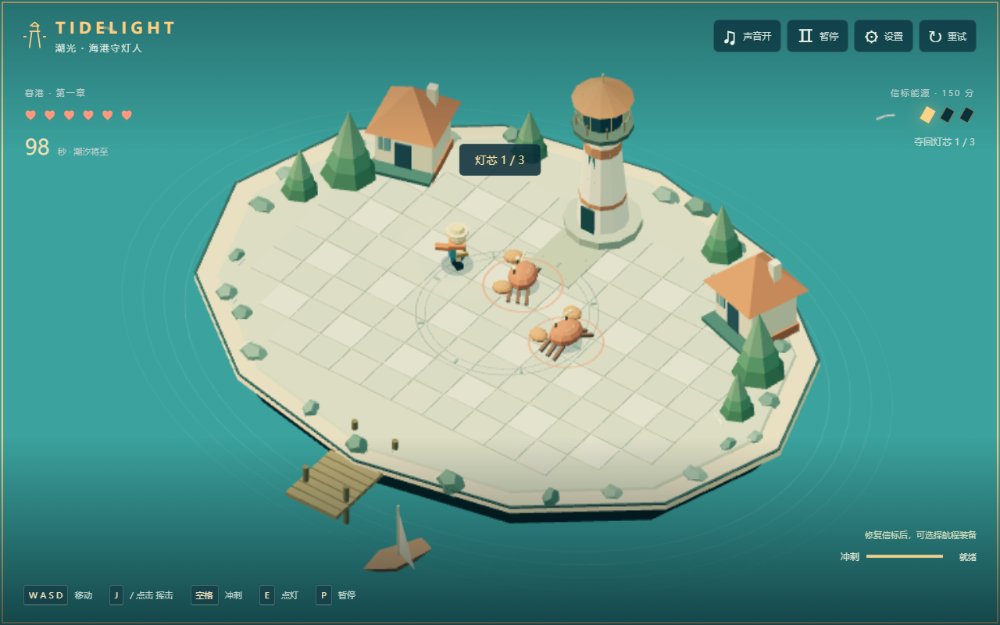
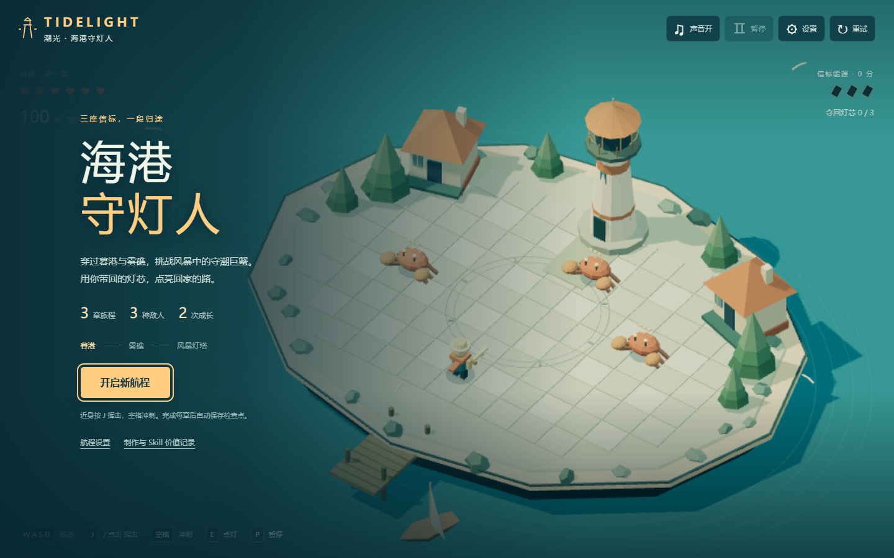
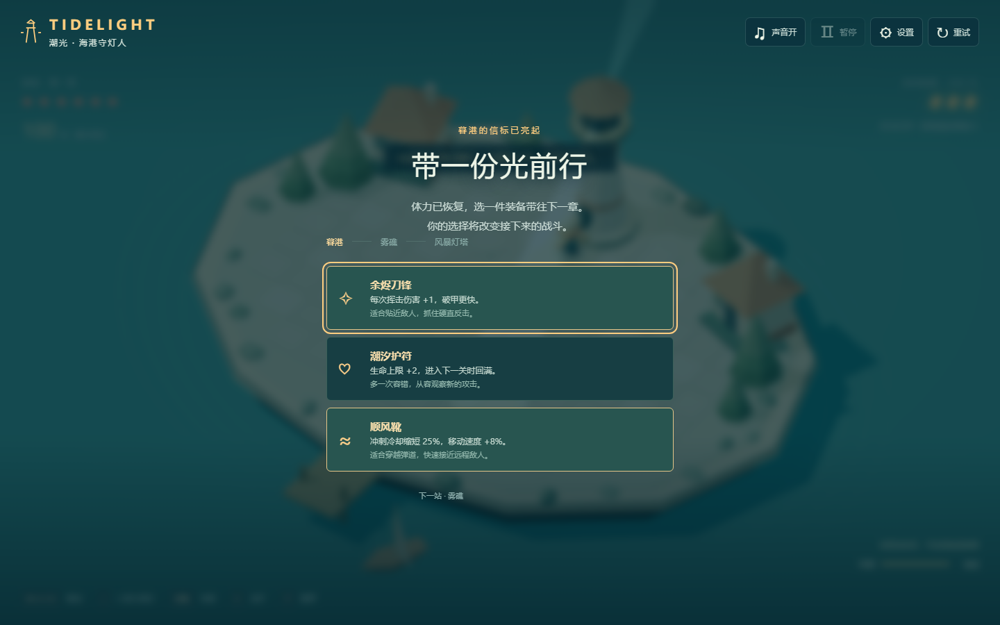
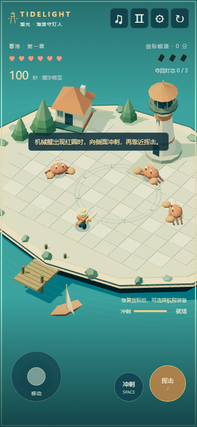

海港守灯人 · Skill 采用效果复盘游戏已完成，
游戏已完成，
Skill 的增益
尚未证实。
本轮采用的内容主要是玩法、状态、界面与反馈的一般建议。模型结合明确需求也能完成这些工作，现有结果没有显示出必须采用这些 Skill 的理由。
本轮结论 · 增益未证实，采用必要性低

3 章近战、火线与首领
6 项有采用记录的 Skill
读取中规则与浏览器检查
读取中键盘实玩通关记录
产品目标
从开场，到成长，再到结局
目标是一款有完整玩家旅程的短篇动作游戏。每章增加一种需要观察的威胁，修复信标后选择影响后续战斗的装备。
场景预览用于快速查看效果，使用预设装备。完整航程从“开启新航程”进入，关间选择与检查点由正常游戏流程产生。
标题 / 续玩·章节说明·战斗与拾取·信标修复·装备三选一·下一章 / 结局
采用记录
六项建议与产物的对应
下面保留阅读与采用过程。这些对应关系只能说明实施了哪些建议，尚不能证明相较于直接开发带来了额外收益。
原型与产品
这次实际增加了哪些能力
保留上一版原型作为参照。这份对照记录产品变化，尚未进行模型直接实现与采用 Skill 的独立对照实验。
| 查看的方面 | 上一版单场原型 | 本轮三章产品 |
|---|---|---|
| 玩家目标 | 一座岛，三只机械蟹，点亮一次灯塔 | 修复三座信标，完成成长与最终结局 |
| 战斗决策 | 同类敌人，近身挥击与冲刺 | 近战、瞄准弹丸、掩体、甲壳窗口、双阶段首领 |
| 成长 | 本局分数 | 两次装备选择，改变伤害、生命或机动能力 |
| 连续游玩 | 本场重开 | 本关重试、检查点续玩、装备与最佳纪录保存 |
| 操作舒适度 | 基本触控与暂停 | 多指取消、失焦复位、弹窗焦点、安全区与画质设置 |
| 验收依据 | 初步运行与两张截图 | 规则测试、浏览器检查、整段实玩视频与原始报告 |
真实运行记录
结果可以回看，也可以复查
规则测试检查状态边界，浏览器检查覆盖界面与输入，整段通关使用正常键盘与菜单操作。测试场景与完整通关分别记录。




性能检查
先测量，再调整渲染开销
相同 CSS 视口与场景状态下，静态物件使用实例化，阴影按关卡缓存。材质改为适合低多边形画风的 Lambert，自动模式会在持续低帧率时降低三维画布分辨率。
查看视口、画质与渲染器原始数据输入采样记录从按键事件处理到动作帧渲染提交的间隔，未测量外设、浏览器合成与显示器延迟。帧时间是当前 Headless Chromium / SwiftShader 环境的短样本。
实际效果
从新航程到海港亮起
正常键盘输入完成战斗、拾取、升级与信标修复。视频保留了这一轮操作过程。
录像记录的是自动操作程序走正常游戏入口的结果。完整通关脚本只读取状态快照，未调用修改血量、传送或跳关接口。
按问题选 Skill
原清单的八项，各自放在哪里
原帖的 GitHub 链接尚未提供。本轮检索同名开源版本，保存下载快照与 SHA-256，明确区分实际采用和目录收录。
| Skill | 遇到的问题 | 本轮范围 | 可复查资料 |
|---|
增益未证实，采用必要性低
这次实际采用的部分主要是核心循环、状态管理、界面流程和动作反馈等通用建议。制作过程中没有实际接入这些 Skill 提供的可执行工具、实现模板、专业资产或特定引擎服务，现有产物未呈现可辨认的额外能力。
三章游戏、46 项功能检查和通关录像证明完成了本轮功能范围。首领规则修正、存档校验与性能改善来自具体的设计和代码工作，这些结果尚不能单独归因于 Skill。阅读并采用说明的记录也不足以证明效率提升。
因此，对本次 Three.js 小游戏的判断是采用必要性低。相同需求与预算下的时间、质量和返工差异尚未实测。普通玩家理解、真机触控、实体手柄及长期可玩性仍缺少测试。